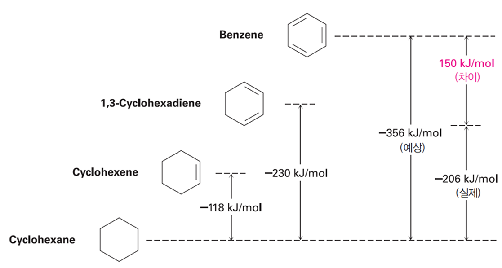
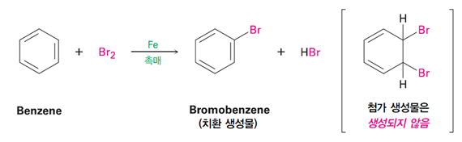
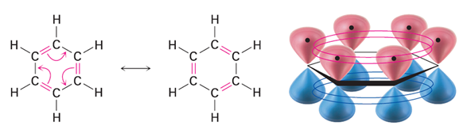

벤젠과 방향족성: 벤젠의 구조와 안정성
짧은 파트다. 벤젠의 구조와 안정성에 대해서 알아보자.
벤젠은 6개의 탄소원자가 고리를 이루고 있으며 고리 내 3쌍의 결합이 콘쥬게이션되어있는 방향족 화합물이다. 분자식은 C6H6으로 불포화도가 4(수소원자 8개 부족)
고리 내에 파이 전자가 6개가 존재해 불안정할 것으로 예상되지만 실제로는 매우 안정하다. 이를 수소화 반응열로 비교해볼 수 있다.

결합이 늘어날 때 마다 100정도의 수소화에너지가 증가하는데, 벤젠은 예상되는 것보다 150정도 에너지가 낮다. 이는 벤젠의 안정성을 보여준다.
때문에 전자가 풍부해서 친핵성이 클 것 같지만 안정해서 반응을 잘 하지 않는다. 알켄의 첨가 반응이 아닌 치환반응이 잘 일어난다.

벤젠의 결합은 1.5결합으로, 결합길이가 2중결합보다 짧다. 그리고 아래처럼 공명구조를 가진다.

왜 안정한가? 6개의 파이전자가 6개의 분자오비탈을 만듬. 이때 에너지가 낮은 결합성 MO가 3개가 생기고 여기에만 전자 6개가 분배됨. 이는 비편재화라고 불리며 안정성을 불러온다. (즉 전자가 존재할 수 있는 공간 자체가 벤젠이 더 크다.)